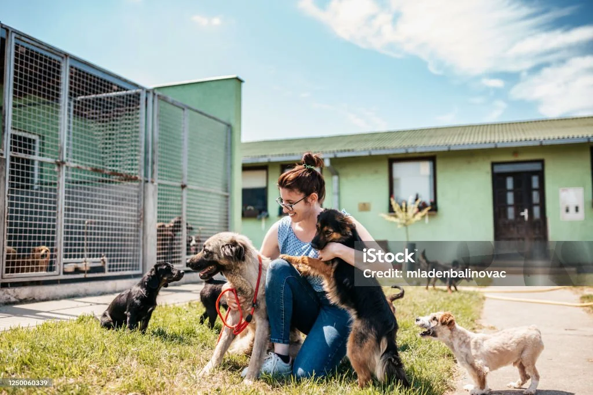

Resgate e acolhimento
Equipes treinadas atendem chamados de animais em risco e oferecem abrigo temporário até a adoção.
Cada patinha merece um lar

O Instituto Patas do Bem nasceu em 2018 com a missão de resgatar animais em situação de abandono, oferecer tratamento veterinário e encontrar lares responsáveis. Atuamos com resgate, castração e adoção.
Já resgatamos mais de 1.500 animais e contamos com uma rede de 200 voluntários. Acreditamos que cada vida importa.
Equipes treinadas atendem chamados de animais em risco e oferecem abrigo temporário até a adoção.
Mutirões mensais de castração gratuita para animais de famílias de baixa renda, controlando a população de rua.
Endereço: Rua dos Bichinhos, 456 – Jardim Animal, São Paulo – SP
Telefone: (11) 98888-8888
E-mail: contato@patasdobem.org
Horário: Seg–Sáb, 8h às 17h